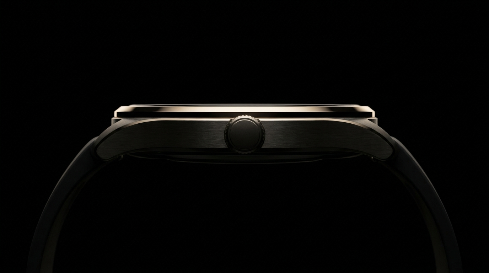
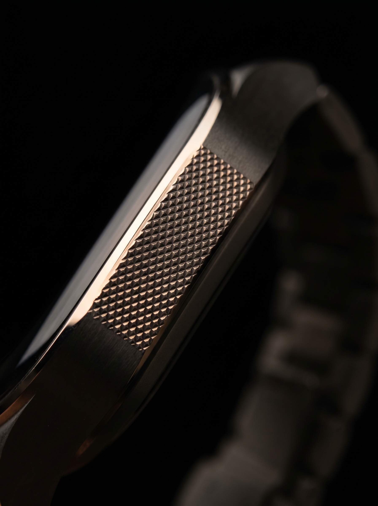
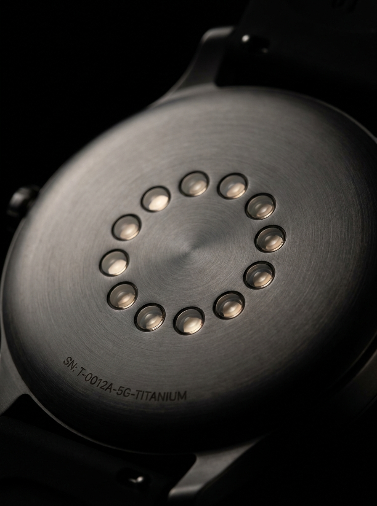
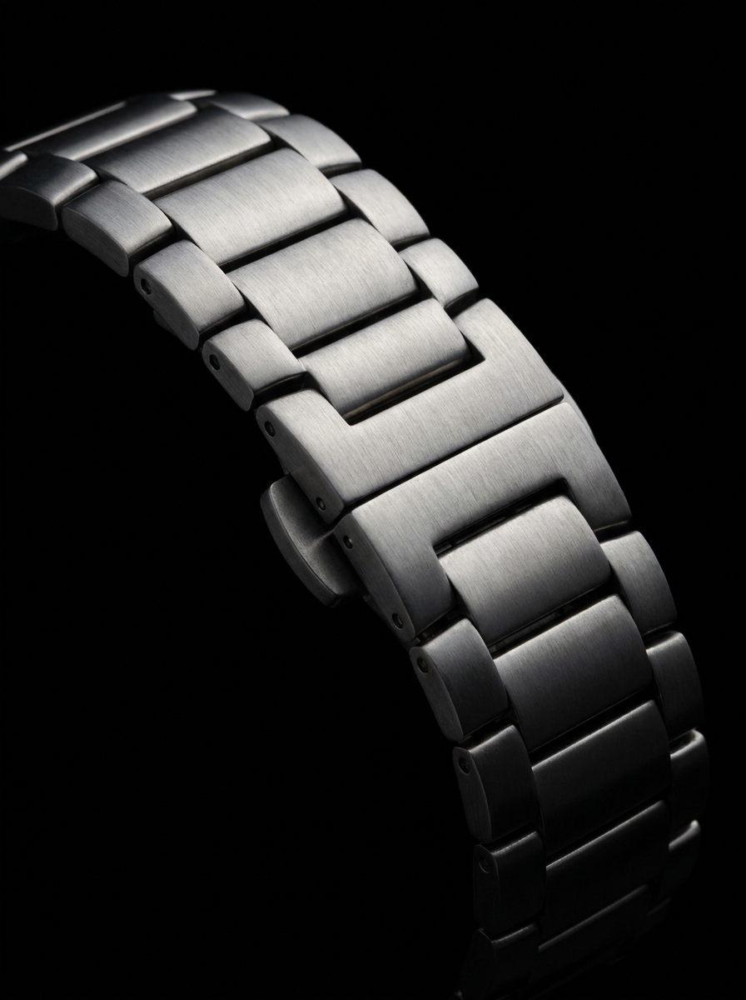
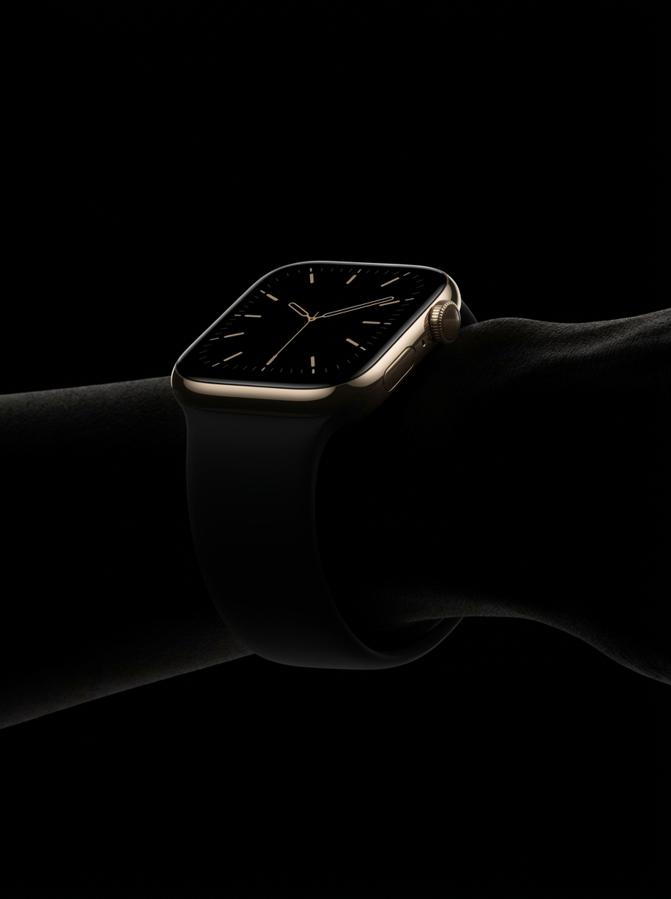

Nocturne Nº 01 — Ætheŕ
Ætheŕ is the first instrument from Maison Nocturne. A timepiece that does not ask for attention — only its absence.
Details · 05 perspectives
Five frames from the same atelier. The instrument from the angles you don't see in the brochure.





First Edition · Numbered to 500
The first edition ships in autumn. Each piece is numbered, hand-finished, and accompanied by a certificate from the atelier in Le Locle.
Reserve yours € 4,200No charge until shipment · Limited 500